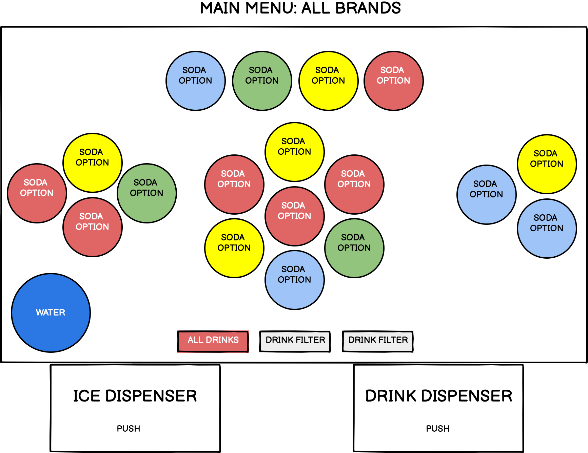
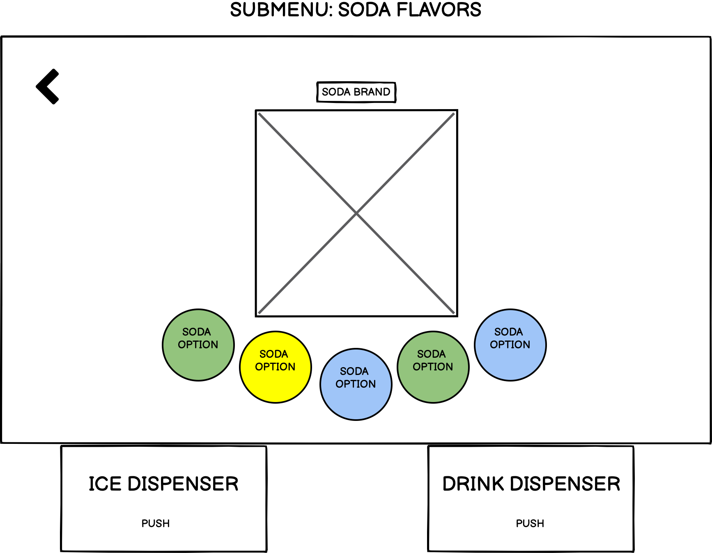

knowing your users and their stories is key to making an effective interface.
we observed and interviewed users of the ratty's coca-cola self-serve 7000, created user personas, and drew storyboards in an attempt to evaluate the soda machine's interface.
the self-serve 7000 begins on a main screen page with an assortment of drink choices.
after selecting a drink, there is often a submenu with flavor options for that specific drink.
users may pour ice at any time, but may only fill a drink after it has been selected.
we asked 3 users to answer the following questions:
how users responded to the above questions
objective observations noted during usage
user personas created based on responses and observations
storyboards based on the above user personas
given the range in usage—-new users, experienced users, browsers, and regular drink-getters—- the self-serve 7000's interface seems to lie in a happy middle ground. users who have a drink in mind can find it easily, and browsers are allowed to dive into submenus for specific flavors, rather than seeing every flavor of every soda at once.
Note: code from bootstrap's reference pages was used to create and format the inputs in the "interviews" section, and code from Jeff's bootstrap tutorial was used for the navbar.